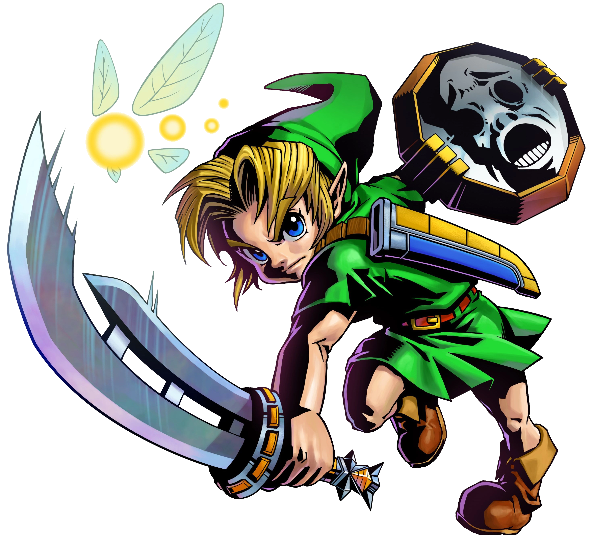

Una leyenda que se repite
El ciclo
de Hyrule
Un archivo visual para recorrer las eras, los héroes y los destinos entrelazados de The Legend of Zelda.
Desde los cielos hasta el reino salvaje
01El principio de todas las leyendas

Un archivo visual para recorrer las eras, los héroes y los destinos entrelazados de The Legend of Zelda.